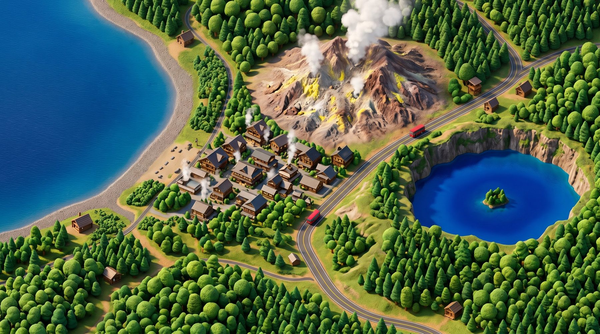

12月〜3月ごろ
🦢 屈斜路湖のオオハクチョウ
冬は湖全体が凍りつく屈斜路湖ですが、温泉が湧く「砂湯」の周辺だけは凍らず、シベリアから渡ってきた真っ白なオオハクチョウたちが羽を休めています。湯けむりと白鳥のコラボは冬だけの絶景！
カルデラの絶景・噴煙上がる活火山・癒やしの足湯をめぐる、大自然1日制覇ガイド！

滞在目安：60分 ｜ 神秘の「摩周ブルー」
世界有数の透明度を誇るカルデラ湖。展望テラスから「摩周ブルー」を背景にクラス全員で記念撮影！
ゴウゴウと音を立てて噴煙が上がる活火山。目の前まで近づける大迫力の地球体験と、名物「温泉蒸し卵」が人気。
強酸性の名湯を気軽に体験できる無料足湯でほっと一息。温泉街でのランチやスイーツ食べ歩きも楽しめます。
日本最大のカルデラ湖。湖畔の砂を掘ると温かい温泉が湧き出す「マイ足湯」づくりで旅の締めくくり！
川湯温泉の足湯や屈斜路湖の砂湯で大活躍！濡れたタオルを入れるビニール袋もあると完璧です。
摩周湖の展望台は風が強い日が多いです。夏でも薄手のウインドブレーカーがあると安心。
硫黄山のゴツゴツした岩場や砂湯の湖畔を歩くので、汚れてもOKな靴がベストです。
もし冬の修学旅行や、いつか冬にまた弟子屈町を訪れるなら必見！極寒だからこそ出会える幻想的な絶景3選です。
冬は湖全体が凍りつく屈斜路湖ですが、温泉が湧く「砂湯」の周辺だけは凍らず、シベリアから渡ってきた真っ白なオオハクチョウたちが羽を休めています。湯けむりと白鳥のコラボは冬だけの絶景！
氷点下の朝、霧や水蒸気が木々の枝に凍りついて真っ白な氷の花が咲く「霧氷」。太陽の光に照らされてキラキラ輝く木々と、深い藍色の摩周湖のコントラストは息をのむ美しさです。
キンと冷えた空気の中、真っ白な雪景色を眺めながら入る川湯温泉の足湯は格別！温泉川からモクモクと立ち上る湯けむりと、運が良ければ見られるダイヤモンドダストも冬の醍醐味です。